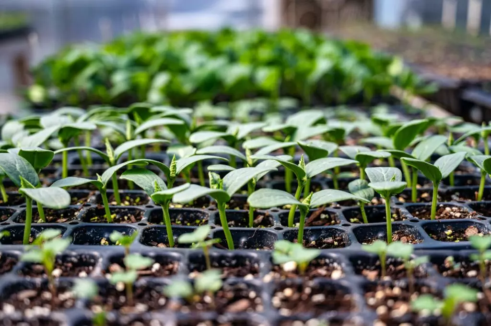

O Distrito Federal programa realizar no segundo semestre o Dia Oficial de Plantio de Mudas. A iniciativa é fruto de uma parceria entre a Secretaria do Meio Ambiente e Proteção Animal (Sema) e o Movimento Regenerativo Tempo de Plantar, que organiza campanhas nacionais de plantio e cuidado das árvores no tempo das chuvas, entre outubro e março.
Os representantes do movimento estiveram reunidos com o secretário da Sema, Gutemberg Gomes, na última segunda-feira (8), para apresentar a agenda de ações e iniciativas com foco nas questões ambientais e na qualidade de vida da população.
“Cuidar das plantas e da natureza traz um bem-estar para as pessoas e isso reflete na melhoria da saúde mental. Outro ponto é o cuidado com a natureza, o plantio de árvores, a recuperação das áreas degradadas com as boas práticas e técnicas de restauração do cerrado, hoje um dos biomas mais ameaçados do Brasil. É a ação mais eficiente para se mitigar a crise climática, cujos efeitos já se fazem sentir todos os anos”, diz Paulo César Araújo, presidente do Instituto Regenerativo Tempo de Plantar.
Araújo acredita que incluir no calendário da cidade uma data para a iniciativa será benéfico para todos. “A ideia é que no primeiro domingo de dezembro as pessoas saiam de casa indo para os parques do DF plantar uma muda, com um sentimento de cuidado com as árvores e com o meio ambiente. Assim como saímos para celebrar outras datas festivas, iremos festejar uma data de cuidado com a natureza”, completa.
Gutemberg Gomes apoia a criação da data e afirma que a iniciativa “é uma ação importante para minimizarmos a emissão dos gases de efeito estufa que impactam nas mudanças climáticas.” De acordo com a Sema, serão feitos estudos e oficinas colaborativas, com a participação da sociedade, para análise e viabilidade da iniciativa.
O Movimento Regenerativo Tempo de Plantar é um grupo voluntário que mobiliza todos os anos a sociedade para viver uma experiência de regeneração, plantando e cuidando de uma muda de árvore durante o período chuvoso. Todo primeiro domingo de dezembro é feito um mutirão nacional de plantio de árvores.
O projeto se organiza em 27 Comitês de Plantios de Árvores, espalhados nas regiões administrativas do DF, geridos por uma rede de voluntários. “Nos comitês, organizamos oficinas para ensinar à população a escolher as árvores nativas do cerrado e os locais adequados para o plantio, ensinamos como plantar e cuidar, além disso, produzimos feiras de trocas de sementes, entre outras ações. Hoje, temos mais de 1.000 pessoas em todo o DF que participam do Movimento”, conclui Araújo.